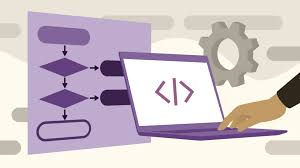
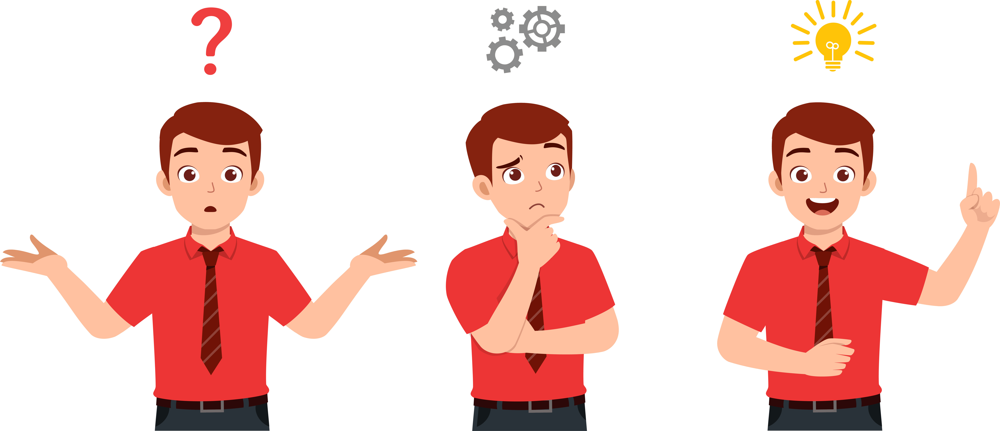

Curso de Fundamentos de la Programación

Descripción del Curso
Este curso está diseñado para principiantes que desean comprender los conceptos básicos de la programación. A lo largo de varias lecciones, aprenderás sobre las estructuras de control, variables, funciones y cómo resolver problemas mediante la programación.
Duración del Curso
Duración total: 100 minutos
Objetivos del Curso
- Comprender los conceptos fundamentales de la programación.
- Aprender a usar variables, operadores y estructuras de control.
- Desarrollar funciones y trabajar con la lógica de programación.
- Resolver problemas y crear programas simples.
Contenido del Curso
- Módulo 1: Introducción a la Programación (10 minutos)
- Módulo 2: Variables y Tipos de Datos (20 minutos)
- Módulo 3: Estructuras de Control (20 minutos)
- Módulo 4: Funciones y Procedimientos (20 minutos)
- Módulo 5: Resolviendo Problemas de Programación (20 minutos)
Módulo 1: Introducción a la Programación
La programación es el proceso de escribir instrucciones que las computadoras pueden entender para realizar tareas. En este módulo, aprenderás qué es la programación, por qué es importante y cómo puede ayudarte a resolver problemas.
¿Qué es la Programación?
Es el arte de crear programas informáticos que permiten realizar diversas tareas mediante código.
¿Por qué es importante?
La programación es fundamental para desarrollar aplicaciones, sitios web, juegos y más, siendo una habilidad clave en la era digital.
Módulo 2: Variables y Tipos de Datos
En este módulo, aprenderás sobre las variables, cómo almacenar datos y los diferentes tipos de datos que puedes utilizar en programación.
¿Qué son las Variables?
Las variables son espacios en memoria donde puedes almacenar información para utilizarla más tarde.
Tipos de Datos
- Enteros: Números enteros.
- Flotantes: Números decimales.
- Strings: Cadenas de texto.
- Booleanos: Valores verdadero o falso.
Módulo 3: Estructuras de Control
En este módulo, aprenderás sobre las estructuras de control, como los condicionales y los bucles, que te permiten tomar decisiones dentro de un programa.
Estructuras Condicionales
Permiten ejecutar diferentes bloques de código según se cumpla o no una condición.
Bucle o Ciclos
Permiten repetir un bloque de código varias veces, lo que facilita la automatización de tareas repetitivas.
- For: Para repetir un bloque de código un número determinado de veces.
- While: Para repetir el código mientras se cumpla una condición.
Módulo 4: Funciones y Procedimientos
Aprenderás cómo dividir tu código en bloques más pequeños y reutilizables llamados funciones y procedimientos, lo que hace tu código más limpio y eficiente.
¿Qué es una Función?
Una función es un bloque de código que realiza una tarea específica y puede ser reutilizado en diferentes partes del programa.
¿Qué es un Procedimiento?
Un procedimiento es similar a una función, pero generalmente no devuelve un valor.
Módulo 5: Resolviendo Problemas de Programación

En este módulo, aplicarás lo aprendido para resolver problemas de programación sencillos y mejorarás tu capacidad para pensar de manera lógica.
Ejemplo de Problema Resuelto
Vamos a resolver un problema simple usando lo aprendido: calcular la suma de los primeros 100 números naturales.
Proceso
Analizaremos el problema, escribiremos el algoritmo y luego programaremos la solución paso a paso.
Conclusión
¡Felicidades! Has completado el curso de Fundamentos de la Programación. Ahora tienes una base sólida para comenzar a programar y seguir aprendiendo sobre el desarrollo de software.